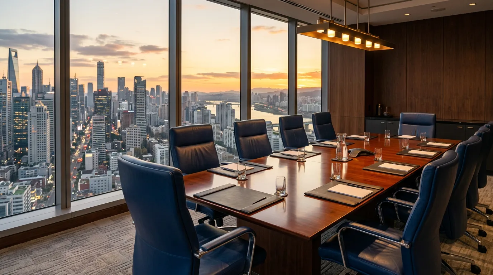
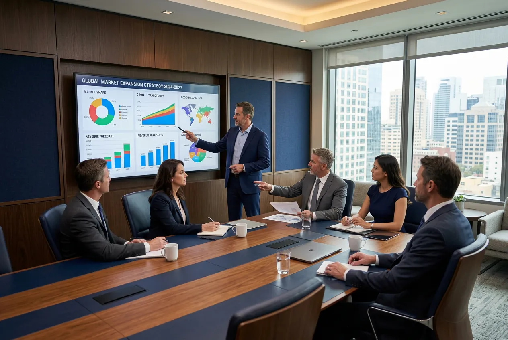
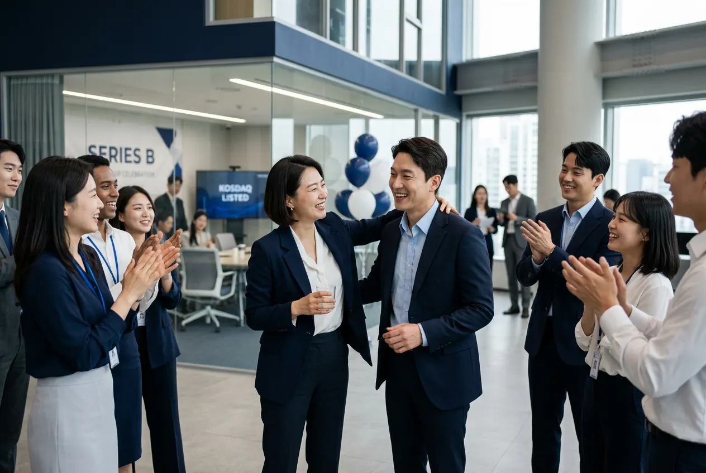
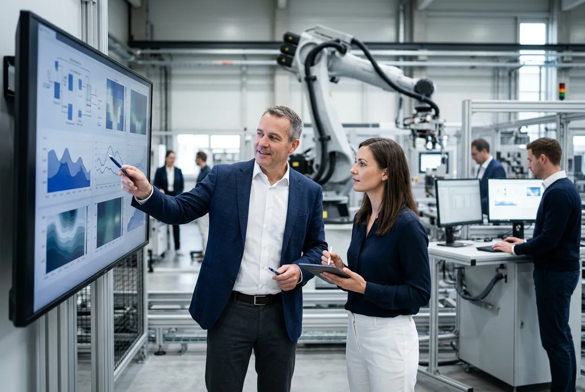
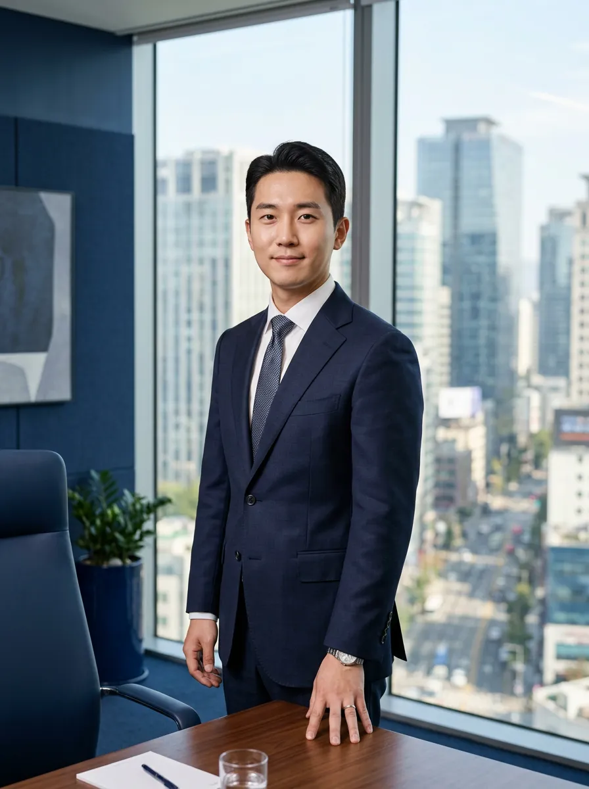
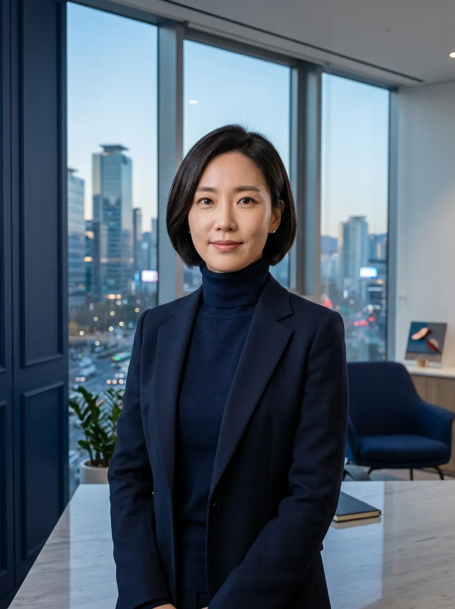
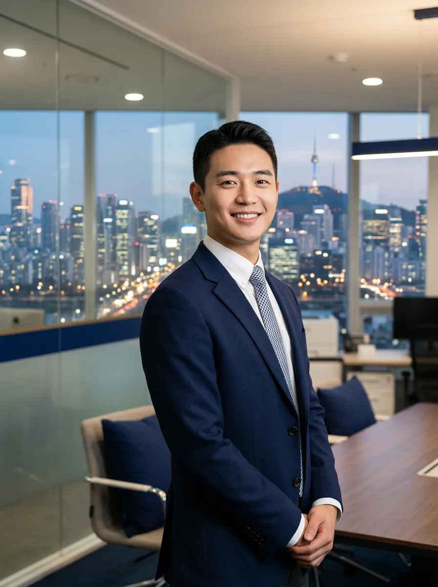
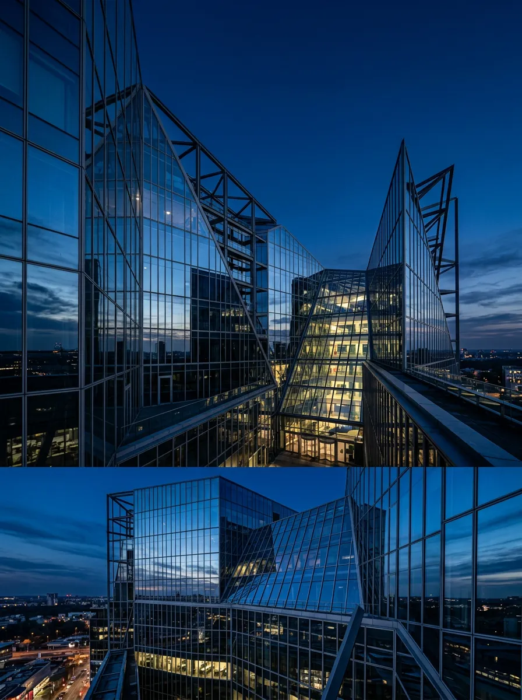
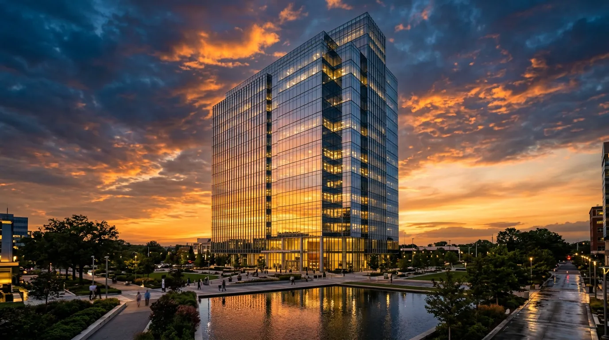

Strategic Consulting
전략의 중심에는
언제나 사람이 있습니다
스트래티움은 데이터와 통찰 너머,
조직을 움직이는 '사람'에 집중합니다.
Our Philosophy
우리가 믿는 것
숫자만으로는 기업이 바뀌지 않습니다.
변화를 이끄는 건 결국 사람입니다.
스트래티움 컨설팅은 2011년 설립 이래, 전략의 본질은 조직을 구성하는 사람들에게 있다는 믿음을 지켜왔습니다. 우리는 분석 리포트가 아닌, 실행 가능한 변화를 만듭니다.
People-First
사람 중심 접근
Data-Driven
데이터 기반 의사결정
Execution
실행까지 책임
Our Services
성장의 모든 국면에서
함께합니다

디지털 전환
레거시 시스템을 넘어,
조직의 디지털 역량을 근본부터 재설계합니다.
프로세스 자동화, 데이터 인프라, AI 도입 전략.
M&A 자문
인수합병의 전 과정에서 실사부터 PMI까지 전략적 파트너로 함께합니다. 기업가치 평가, 시너지 분석, 통합 로드맵.
조직 설계
변화에 민첩하게 대응하는 조직 구조를 만듭니다. 거버넌스 재편, 인재 전략, 성과 관리 체계 수립.
Our Impact
우리가 만든 변화
스트래티움과 함께한 기업들이
경험한 실질적 성과를 소개합니다.
0
프로젝트 완수
0
고객 재계약률
0
평균 매출 성장률
0
산업 분야 커버리지
Case Studies
기업의 전환점을
함께 만들었습니다
← 스크롤하여 더 보기

시리즈B → 코스닥 상장
18개월의 여정
AI 바이오텍 스타트업의 기업가치 500억 달성까지, 투자 유치 전략과 IPO 로드맵을 함께 설계했습니다.
500억
기업가치
18개월
소요 기간

제조업 디지털 전환
운영 효율의 재정의
연매출 3,000억 규모 제조기업의 스마트 팩토리 전환. 공정 자동화와 예측 보전으로 가동률을 극대화했습니다.
42%
효율 개선
₩180억
비용 절감
금융사 PMI
두 조직, 하나의 문화
국내 중견 증권사 합병 후 Post-Merger Integration. 조직 문화 통합과 시스템 일원화를 12개월 내 완료했습니다.
12개월
통합 완료
98%
인력 유지율
유통 대기업
애자일 조직 전환
5,000명 규모 유통 기업의 거버넌스 재편. 사업부제에서 스쿼드 기반으로의 전환을 설계하고 실행했습니다.
5,000명
조직 규모
35%
의사결정 속도↑
Leadership
전략가들
글로벌 컨설팅 펌 출신 전문가들이
직접 프로젝트를 리드합니다.

김현수
대표이사 · CEO
前 McKinsey & Company 파트너. 서울대 경영학과, Wharton MBA. 15년간 200+ 전략 프로젝트 리드.

박지연
전무이사 · Managing Director
前 BCG 프린시펄. 연세대 경제학과, INSEAD MBA. 디지털 전환 전략 전문. 제조·유통·금융 산업 특화.

이승민
상무 · Senior Director
前 Bain & Company 매니저. KAIST 산업공학, MIT Sloan MBA. M&A 및 PMI 전문. 금융·헬스케어 산업.

Testimonials
파트너사의 이야기
"스트래티움의 가장 큰 차별점은 리포트를 주고 떠나지 않는다는 점입니다. 우리 팀 옆에서 실행까지 함께했고, 결과로 증명했습니다."
정태환
바이오젠 테크놀로지 · CEO
"합병 후 가장 어려운 건 사람의 문제였습니다. 스트래티움은 조직 문화의 갈등을 정면으로 다루면서도 섬세하게 풀어주었습니다."
윤서진
한강증권 · COO
"디지털 전환이 IT 투자라고만 생각했는데, 스트래티움은 조직과 프로세스부터 바꿔야 한다는 걸 깨닫게 해주었습니다. 진짜 전환이었습니다."
김도현
대산중공업 · 전략기획실장
Our Process
협업의 여정
첫 미팅부터 성과 리뷰까지,
투명하고 밀도 높은 프로세스.
디스커버리 워크숍
경영진과의 심층 인터뷰, 조직 진단, 핵심 과제 정의. 2-3일간의 집중 워크숍으로 시작합니다.
전략 어세스먼트
시장·경쟁·내부역량 분석을 통해 전략적 기회와 리스크를 정밀하게 매핑합니다.
실행 로드맵
분석 결과를 실행 가능한 90일/180일/365일 단위의 구체적 액션 플랜으로 전환합니다.
실행 지원
전담 팀이 클라이언트 조직에 상주하며 전략의 실행을 직접 지원합니다. 매주 진척도를 점검합니다.
성과 리뷰
정량적 KPI 달성도를 측정하고, 지속 가능한 성장을 위한 후속 전략을 제안합니다.
Get In Touch
다음 전환점을
함께 설계하겠습니다
30분 무료 전략 상담으로
귀사의 가능성을 확인하세요.
주소
서울 영등포구 여의대로 108
파크원타워 42층
전화
02-6275-0300
이메일
consult@stratium.co.kr
영업시간
월-금 09:00 – 18:00
